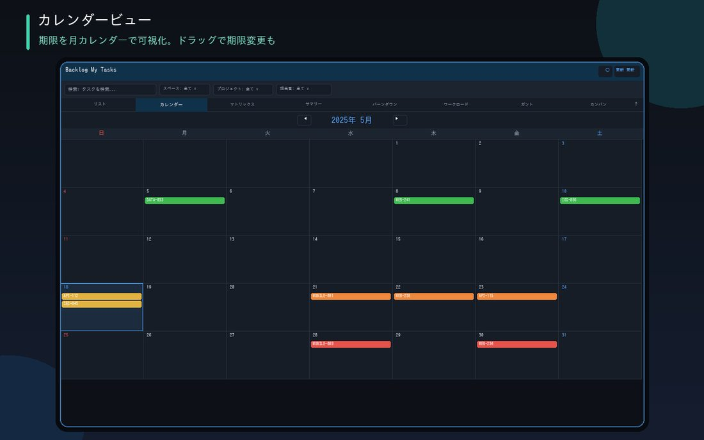

태스크를 기한 날짜의 칸에 배치합니다. 이번 달 마감 분포를 한눈에 알 수 있어 월말에 허둥댈 일도 없어집니다.

태스크를 기한 날짜의 칸에 표시합니다. 이번 달 마감 분포를 한눈에 알 수 있습니다
기한 초과는 빨간색, 오늘 마감은 주황색으로 강조 표시됩니다. 놓치는 일을 방지
이번 달/다음 달 건수 배지에 더해 전후 달 셀에도 실제 태스크를 표시합니다. 지난주 분량까지 보이는 7주 롤링 표시도 선택 가능
태스크를 클릭하면 해당 이슈를 바로 열 수 있습니다